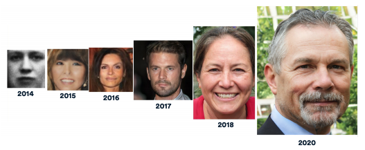

斯坦福以人为本人工智能学院（HAI)）发布了其 2021 年人工智能指数报告. 与上一年相比，本年度报告的基础数据得到了进一步地扩展。并且该报告从多个角度讨论了新冠疫情的大规模爆发对人工智能技术研究和发展的影响。
为了提高该新报告的质量，在过去的一年中，相关研究机构与 140 多位来自学术界、政府和工业界的成员进行了交流。因此，新报告包含有更多的数据，并对技术性能、多样性以及道德问题进行了研究。报告总共包含七个章节，可用九个关键词进行总结。特别地，用于分子生物学和药物研发的人工智能应用获得了最多的私人投资，其中部分的原因是新冠疫情的爆发。新冠疫情还导致许多 AI 会议转换为线上会议，从而提高了参与度。但是，新冠疫情并没有对 AI 投资和职场产生不利影响。与往年相比，今年 AI 领域的博士毕业生进入工业界工作的比例有所增加。
该报告分为七个章节：研究与发展、技术性能、经济、人工智能教育、人工智能应用的道德挑战、人工智能的多样性、AI 政策和国家策略。这些章节基于公开可用的数据，并包含数十个图表。 “研究与开发”一章涵盖了研究论文和会议随着时间和地理区域的变化而增长。“技术性能” 章节在计算机视觉（CV），自然语言处理（NLP）和分子生物学等领域的多个基准上跟踪 AI 的准确性。该报告指出，人工智能系统现在可以生成语音、文字和图像，其质量之高通常使人类无法进行区分。

GAN 网络在人脸合成方面的进步 (图像来源：Stanford HAI AI Index Report)
经济一章着重于各国的就业和投资趋势，而人工智能教育一章则着眼于大学课程和人工智能领域的博士毕业生。一个重要的收获是，在北美，这些新博士中有 65％ 的人选择了工业界而不是学术界的工作，而上一年为 44.4％。道德挑战一章指出，该团队“惊讶地发现有关该主题的数据很少”，并且特别提到了标准的缺乏。多样性一章也提到了缺乏公开可用的数据，但确实地指出了“人工智能劳动力仍然以男性为主”。
最后一章，“人工智能政策与国家战略”，展示了各国公开的人工智能战略白皮书的趋势以及人工智能领域的国际合作趋势。它还重点介绍了美国政府在 AI 投资和政策制定中的作用。报告指出，第 116 届国会会议是“历史上最关注 AI 的国会会议”，提到 AI 的频率是往届国会的三倍以上。
该研究机构还更新了其互动式的“全球活力工具”，可以用 22 个指标对最多 26 个国家/地区进行比较。这些度量标准衡量多种研发，经济和相关因素的表现，例如：会议论文的数量，专利的数量和投资。该工具可以显示所有国家/地区的整体情况或单个国家/地区的详细指标，并包含了 2015 年至 2020 年的数据。
完整的报告可以从 AI 指数网站下载。报告中的原始数据和高分辨率的图片已经在 Google Drive 上公开。该报告采用知识共享署名-禁止演绎 4.0国际许可协议进行许可。
如果发现译文存在错误或其他需要改进的地方，欢迎到 掘金翻译计划 对译文进行修改并 PR，也可获得相应奖励积分。文章开头的 本文永久链接 即为本文在 GitHub 上的 MarkDown 链接。
掘金翻译计划 是一个翻译优质互联网技术文章的社区，文章来源为 掘金 上的英文分享文章。内容覆盖 Android、iOS、前端、后端、区块链、产品、设计、人工智能等领域，想要查看更多优质译文请持续关注 掘金翻译计划、官方微博、知乎专栏。